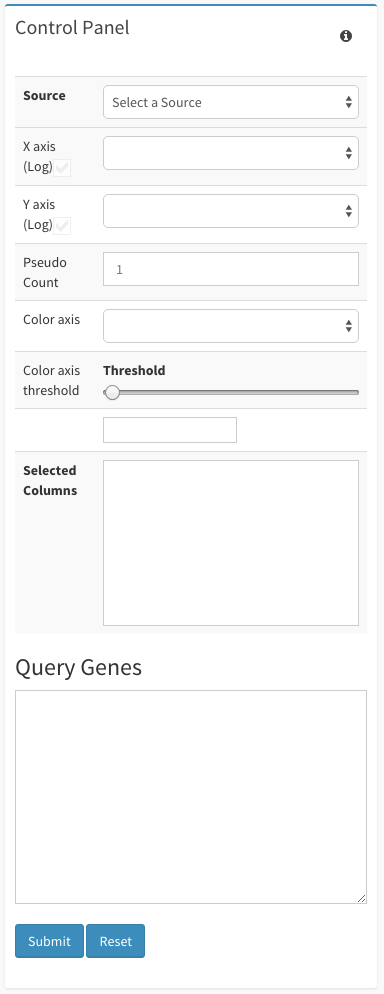
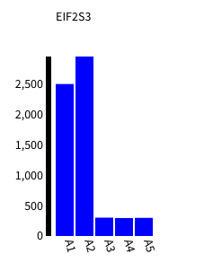
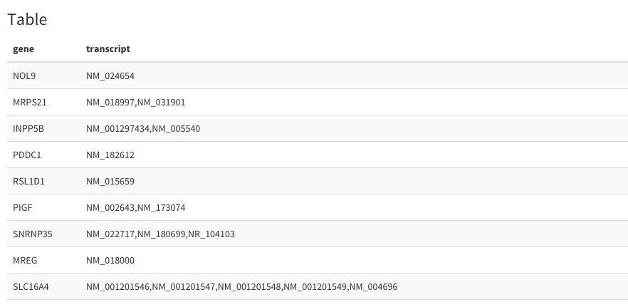

NGS Plots Guide¶
This guide will walk you through all of your options within the Plots page.
Getting Started¶
First, make sure to have an instance of dolphin available (see Dolphin Docker) as well as an account for the dolphin interface.
Once logged in, click on the ‘NGS Tracking’ tab on the left, then click on ‘Run Status’.

After navigating to the status page, the next step is to make sure the run whose results you are interested in has completed without errors.
Once you have a completed run, you can select the options button on the far right and select the ‘Generate Plots’ option.

Selection this option will bring you to the Plots page.
Alternatively, You can visit the Reports page for a specified run and click on the ‘Go To Plots’ button at the bottom of the page to go to the plots page.
Also, you can view your generated tables from the Generated Tables page by selecting to go to plots from the desired table. Please see the ‘Table Creator Guide’ for additional information.
Plots Navigation¶
Upon navigating to the plots page, you will notice that there are 3 major sections to the page. These sections include the Control Panel, the Plots, and the Plots Table.
Contol Panel:
In order to view the plots of your run, you first need to select the actual data you want to examine. The dropdown menu next to ‘Source’ will give the user a list of pontential files to view.

If the file you want to view isn’t an option in the dropdown menu, you can always manually type in the source of the file by selecting the ‘Input TSV file location’ option.

Once you’ve selected the file you wish to plot the other various options in the control panel will fill up with the appropriate additional information.
The X axis and Y axis dropdown menus select which variable will be represented for both the X and Y axis within the scatter plot.
The Color axis dropdown menu controls the color separation of data within the scatter plot.
The Color axis threshold has both a slider and an input box where the user can control the color threshold represented within the scatter plot.
In order for the barplot, heatmap, and plot table to map data, a selection from the Selected Columns box must be made. Multiple selections can be made at the same time.
The Query Genes input allows the user to input specific genes in a comma separated format. After input of a gene list, the user can hit ‘Submit’ under the input box and the queried genes will be selected on the various plots.
Last, the ‘Selected Region’ box displays all the genes selected from the scatter plot in a comma-separated format.

Plots:
The plots section is divided into 3 specific types of plots: a scatter plot, a barplot, and a heatmap.
Once you have determined you’ve input your source file for the plot, a scatter plot will appear within the ‘Scatter plot’ box based on your specific input variables.

As the scatter plot fills out, you can then click and drag your mouse over data points to select them for both the heatmap selection and the Plot Table selection.

The barplot fills out based on your ‘Selected Column’ section and which point on the scatter plot you mouse over with the cursor.
You can also hover over heatmap rows and the barplor will fill with the corresponding information from the heatmap.
Plots Table:
The plots table fills once a selection has been made within the scatterplot and will fill accordingly.
This plots table displays the selection made by the user as well as the values that differ between the samples.
Selections of many points can be expanded by clicking on the ‘Show entire table’ button at the very bottom of the table list.
Most of the files displayed in the graphs can be obtained from the ‘NGS Reports page’ for download. For more information on how to navigate the Reports page, please check out the ‘NGS Reports Guide’.